Go 语言的 slice 很好用，不过也有一些坑。slice 是 Go 语言一个很重要的数据结构。网上已经有很多文章写过了，似乎没必要再写。但是每个人看问题的视角不同，写出来的东西自然也不一样。我这篇会从更底层的汇编语言去解读它。而且在我写这篇文章的过程中，发现绝大部分文章都存在一些问题，文章里会讲到，这里先不展开。
我希望本文可以终结这个话题，下次再有人想和你讨论 slice，直接把这篇文章的链接丢过去就行了。
当我们在说 slice 时，到底在说什么¶
slice 翻译成中文就是切片，它和数组（array）很类似，可以用下标的方式进行访问，如果越界，就会产生 panic。但是它比数组更灵活，可以自动地进行扩容。
了解 slice 的本质，最简单的方法就是看它的源代码：
// runtime/slice.go
type slice struct {
array unsafe.Pointer // 元素指针
len int // 长度
cap int // 容量
}
看到了吗，slice 共有三个属性： 指针，指向底层数组； 长度，表示切片可用元素的个数，也就是说使用下标对 slice 的元素进行访问时，下标不能超过 slice 的长度； 容量，底层数组的元素个数，容量 >= 长度。在底层数组不进行扩容的情况下，容量也是 slice 可以扩张的最大限度。
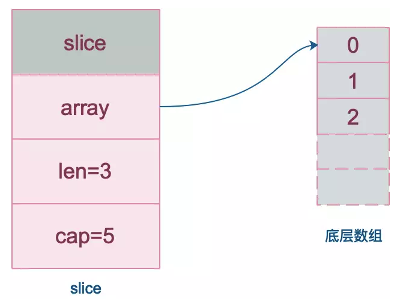43
注意，底层数组是可以被多个 slice 同时指向的，因此对一个 slice 的元素进行操作是有可能影响到其他 slice 的。
slice 的创建¶
创建 slice 的方式有以下几种：
| 序号 | 方式 | 代码示例 |
|---|---|---|
| 1 | 直接声明 | var slice []int |
| 2 | new | slice := *new([]int) |
| 3 | 字面量 | slice := []int{1,2,3,4,5} |
| 4 | make | slice := make([]int, 5, 10) |
| 5 | 从切片或数组“截取” | slice := array[1:5] 或 slice := sourceSlice[1:5] |
直接声明¶
第一种创建出来的 slice 其实是一个 nil slice。它的长度和容量都为0。和nil比较的结果为true。
这里比较混淆的是empty slice，它的长度和容量也都为0，但是所有的空切片的数据指针都指向同一个地址 0xc42003bda0。空切片和 nil 比较的结果为false。
它们的内部结构如下图：
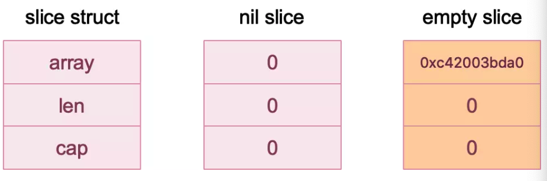
| 创建方式 | nil切片 | 空切片 |
|---|---|---|
| 方式一 | var s1 []int | var s2 = []int{} |
| 方式二 | var s4 = *new([]int) | var s3 = make([]int, 0) |
| 长度 | 0 | 0 |
| 容量 | 0 | 0 |
和 nil 比较 |
true |
false |
nil 切片和空切片很相似，长度和容量都是0，官方建议尽量使用 nil 切片。
关于nil slice和empty slice的探索可以参考公众号“码洞”作者老钱写的一篇文章《深度解析 Go 语言中「切片」的三种特殊状态》，地址附在了参考资料部分。
字面量¶
比较简单，直接用初始化表达式创建。
package main
import "fmt"
func main() {
s1 := []int{0, 1, 2, 3, 8: 100}
fmt.Println(s1, len(s1), cap(s1))
}
运行结果：
[0 1 2 3 0 0 0 0 100] 9 9
唯一值得注意的是上面的代码例子中使用了索引号，直接赋值，这样，其他未注明的元素则默认 0 值。
make¶
make函数需要传入三个参数：切片类型，长度，容量。当然，容量可以不传，默认和长度相等。
上篇文章《走进Go的底层》中，我们学到了汇编这个工具，这次我们再次请出汇编来更深入地看看slice。如果没看过上篇文章，建议先回去看完，再继续阅读本文效果更佳。
先来一小段玩具代码，使用 make 关键字创建 slice：
package main
import "fmt"
func main() {
slice := make([]int, 5, 10) // 长度为5，容量为10
slice[2] = 2 // 索引为2的元素赋值为2
fmt.Println(slice)
}
执行如下命令，得到 Go 汇编代码：
go tool compile -S main.go
我们只关注main函数：
0x0000 00000 (main.go:5)TEXT "".main(SB), $96-0
0x0000 00000 (main.go:5)MOVQ (TLS), CX
0x0009 00009 (main.go:5)CMPQ SP, 16(CX)
0x000d 00013 (main.go:5)JLS 228
0x0013 00019 (main.go:5)SUBQ $96, SP
0x0017 00023 (main.go:5)MOVQ BP, 88(SP)
0x001c 00028 (main.go:5)LEAQ 88(SP), BP
0x0021 00033 (main.go:5)FUNCDATA $0, gclocals·69c1753bd5f81501d95132d08af04464(SB)
0x0021 00033 (main.go:5)FUNCDATA $1, gclocals·57cc5e9a024203768cbab1c731570886(SB)
0x0021 00033 (main.go:5)LEAQ type.int(SB), AX
0x0028 00040 (main.go:6)MOVQ AX, (SP)
0x002c 00044 (main.go:6)MOVQ $5, 8(SP)
0x0035 00053 (main.go:6)MOVQ $10, 16(SP)
0x003e 00062 (main.go:6)PCDATA $0, $0
0x003e 00062 (main.go:6)CALL runtime.makeslice(SB)
0x0043 00067 (main.go:6)MOVQ 24(SP), AX
0x0048 00072 (main.go:6)MOVQ 32(SP), CX
0x004d 00077 (main.go:6)MOVQ 40(SP), DX
0x0052 00082 (main.go:7)CMPQ CX, $2
0x0056 00086 (main.go:7)JLS 221
0x005c 00092 (main.go:7)MOVQ $2, 16(AX)
0x0064 00100 (main.go:8)MOVQ AX, ""..autotmp_2+64(SP)
0x0069 00105 (main.go:8)MOVQ CX, ""..autotmp_2+72(SP)
0x006e 00110 (main.go:8)MOVQ DX, ""..autotmp_2+80(SP)
0x0073 00115 (main.go:8)MOVQ $0, ""..autotmp_1+48(SP)
0x007c 00124 (main.go:8)MOVQ $0, ""..autotmp_1+56(SP)
0x0085 00133 (main.go:8)LEAQ type.[]int(SB), AX
0x008c 00140 (main.go:8)MOVQ AX, (SP)
0x0090 00144 (main.go:8)LEAQ ""..autotmp_2+64(SP), AX
0x0095 00149 (main.go:8)MOVQ AX, 8(SP)
0x009a 00154 (main.go:8)PCDATA $0, $1
0x009a 00154 (main.go:8)CALL runtime.convT2Eslice(SB)
0x009f 00159 (main.go:8)MOVQ 16(SP), AX
0x00a4 00164 (main.go:8)MOVQ 24(SP), CX
0x00a9 00169 (main.go:8)MOVQ AX, ""..autotmp_1+48(SP)
0x00ae 00174 (main.go:8)MOVQ CX, ""..autotmp_1+56(SP)
0x00b3 00179 (main.go:8)LEAQ ""..autotmp_1+48(SP), AX
0x00b8 00184 (main.go:8)MOVQ AX, (SP)
0x00bc 00188 (main.go:8)MOVQ $1, 8(SP)
0x00c5 00197 (main.go:8)MOVQ $1, 16(SP)
0x00ce 00206 (main.go:8)PCDATA $0, $1
0x00ce 00206 (main.go:8)CALL fmt.Println(SB)
0x00d3 00211 (main.go:9)MOVQ 88(SP), BP
0x00d8 00216 (main.go:9)ADDQ $96, SP
0x00dc 00220 (main.go:9)RET
0x00dd 00221 (main.go:7)PCDATA $0, $0
0x00dd 00221 (main.go:7)CALL runtime.panicindex(SB)
0x00e2 00226 (main.go:7)UNDEF
0x00e4 00228 (main.go:7)NOP
0x00e4 00228 (main.go:5)PCDATA $0, $-1
0x00e4 00228 (main.go:5)CALL runtime.morestack_noctxt(SB)
0x00e9 00233 (main.go:5)JMP 0
先说明一下，Go 语言汇编 FUNCDATA 和 PCDATA 是编译器产生的，用于保存一些和垃圾收集相关的信息，我们先不用 care。
以上汇编代码行数比较多，没关系，因为命令都比较简单，而且我们的 Go 源码也足够简单，没有理由看不明白。
我们先从上到下扫一眼，看到几个关键函数：
CALL runtime.makeslice(SB)
CALL runtime.convT2Eslice(SB)
CALL fmt.Println(SB)
CALL runtime.morestack_noctxt(SB)
| 序号 | 功能 |
|---|---|
| 1 | 创建slice |
| 2 | 类型转换 |
| 3 | 打印函数 |
| 4 | 栈空间扩容 |
1是创建 slice 相关的；2是类型转换；调用 fmt.Println需要将 slice 作一个转换； 3是打印语句；4是栈空间扩容函数，在函数开始处，会检查当前栈空间是否足够，不够的话需要调用它来进行扩容。暂时可以忽略。
调用了函数就会涉及到参数传递，Go 的参数传递都是通过 栈空间完成的。接下来，我们详细分析这整个过程。
| 行数 | 作用 |
|---|---|
| 1 | main函数定义，栈帧大小为 96B |
| 2-4 | 判断栈是否需要进行扩容，如果需要则跳到 228，这里会调用 runtime.morestack_noctxt(SB) 进行栈扩容操作。具体细节后续还会有文章来讲 |
| 5-9 | 将 caller BP 压栈，具体细节后面会讲到 |
| 10-15 | 调用 runtime.makeslice(SB) 函数及准备工作。*_type表示的是 int，也就是 slice 元素的类型。这里对应的源码是第6行，也就是调用 make 创建 slice 的那一行。5 和 10 分别代表长度和容量，函数参数会在栈顶准备好，之后执行函数调用命令 CALL，进入到被调用函数的栈帧，就会按顺序从 caller 的栈顶取函数参数 |
| 16-18 | 接收 makeslice的返回值，通过 move 移动到寄存器中 |
| 19-21 | 给数组索引值为 2 的元素赋上值 2，因为是 int 型的 slice，元素大小为8字节，所以 MOVQ $2, 16(AX) 此命令就是将 2 搬到索引为 2 的位置。这里还会对索引值的大小进行检查，如果越界，则会跳转到 221，执行 panic 函数 |
| 22-26 | 分别通过寄存器 AX，CX，DX 将 makeslice 的返回值 move 到内存的其他位置，也称为局部变量，这样就构造出了 slice |
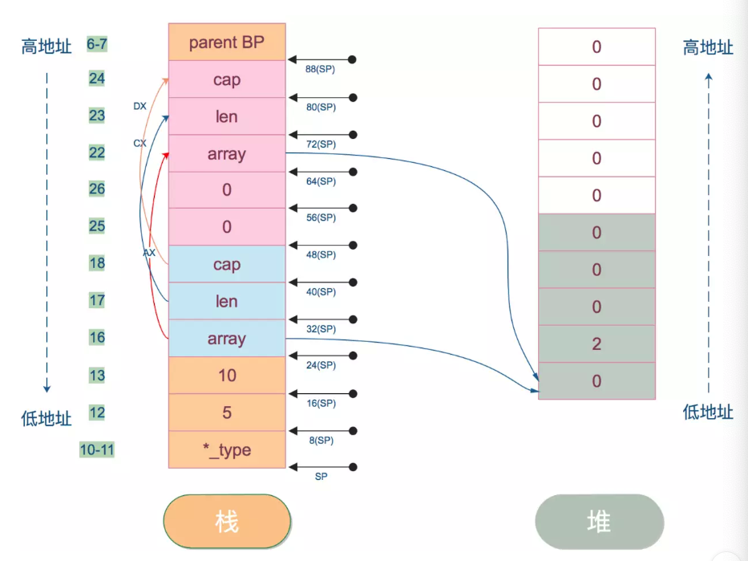
左边是栈上的数据，右边是堆上的数据。array 指向 slice 的底层数据，被分配到堆上了。注意，栈上的地址是从高向低增长；堆则从低向高增长。栈左边的数字表示对应的汇编代码的行数，栈右边箭头则表示栈地址。（48）SP、（56）SP 表示的内容接着往下看。
注意，在图中，栈地址是从下往上增长，所以 SP 表示的是图中 *_type 所在的位置，其它的依此类推。
| 行数 | 作用 |
|---|---|
| 27-32 | 准备调用 runtime.convT2Eslice(SB)的函数参数 |
| 33-36 | 接收返回值，通过AX，CX寄存器 move 到(48)SP、（56）SP |
convT2Eslice 的函数声明如下：
func convT2Eslice(t *_type, elem unsafe.Pointer) (e eface)
第一个参数是指针 *_type，_type是一个表示类型的结构体，这里传入的就是 slice的类型 []int；第二个参数则是元素的指针，这里传入的就是 slice 底层数组的首地址。
返回值 eface 的结构体定义如下：
type eface struct {
_type *_type
data unsafe.Pointer
}
由于我们会调用 fmt.Println(slice)，看下函数原型：
func Println(a ...interface{}) (n int, err error)
Println 接收 interface 类型，因此我们需要将 slice 转换成 interface 类型。由于 slice 没有方法，是个“空 interface”。因此会调用 convT2Eslice 完成这一转换过程。
convT2Eslice 函数返回的是类型指针和数据地址。源码就不贴了，大体流程是：调用 mallocgc 分配一块内存，把数据 copy 进到新的内存，然后返回这块内存的地址，*_type 则直接返回传入的参数。
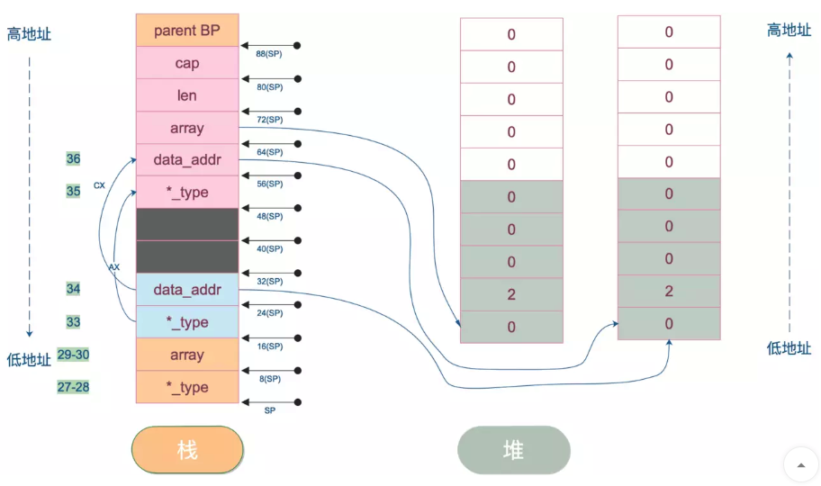
32(SP) 和 40(SP) 其实是 makeslice 函数的返回值，这里可以忽略。
还剩 fmt.Println(slice) 最后一个函数调用了，我们继续。
| 行数 | 作用 |
|---|---|
| 37-40 | 准备 Println 函数参数。共3个参数，第一个是类型地址，还有两个 1，这块暂时还不知道为什么要传，有了解的同学可以在文章后面留言 |
所以调用 fmt.Println(slice) 时，实际是传入了一个 slice类型的eface地址。这样，Println就可以访问类型中的数据，最终给“打印”出来。
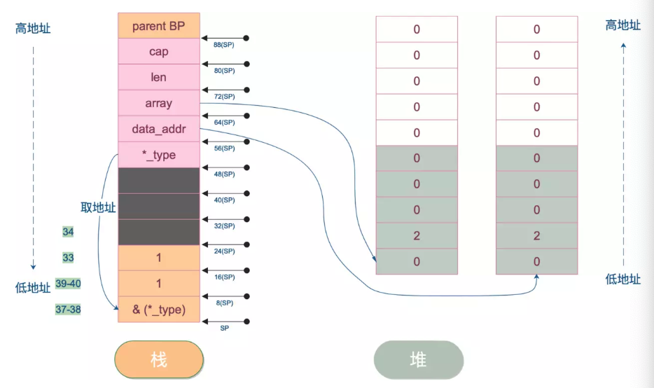
最后，我们看下 main 函数栈帧的开始和收尾部分。
0x0013 00019 (main.go:5)SUBQ $96, SP
0x0017 00023 (main.go:5)MOVQ BP, 88(SP)
0x001c 00028 (main.go:5)LEAQ 88(SP), BP
…………………………
0x00d3 00211 (main.go:9)MOVQ 88(SP), BP
0x00d8 00216 (main.go:9)ADDQ $96, SP
RET
BP可以理解为保存了当前函数栈帧栈底的地址，SP则保存栈顶的地址。
初始，BP 和 SP 分别有一个初始状态。
main 函数执行的时候，先根据 main 函数栈帧大小确定 SP 的新指向，使得 main 函数栈帧大小达到 96B。之后把老的 BP 保存到 main 函数栈帧的底部，并使 BP 寄存器重新指向新的栈底，也就是 main 函数栈帧的栈底。
最后，当 main 函数执行完毕，把它栈底的 BP 给回弹回到 BP 寄存器，恢复调用前的初始状态。一切都像是没有发生一样，完美的现场。
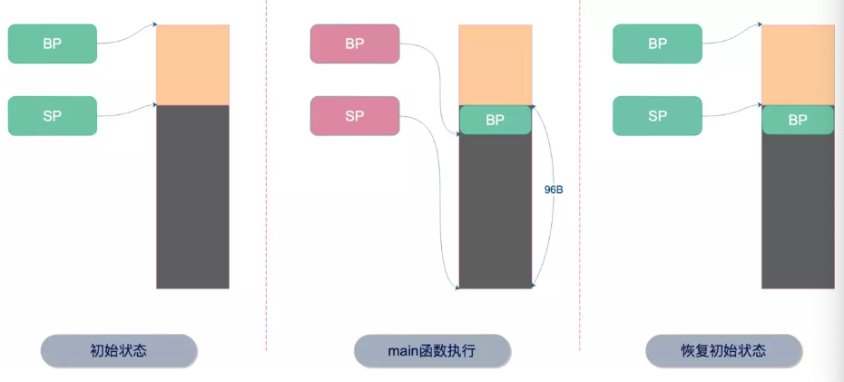
这部分，又详细地分析了一遍函数调用的过程。一方面，让大家复习一下上一篇文章讲的内容；另一方面，向大家展示如何找到 Go 中的一个函数背后真实调用了哪些函数。像例子中，我们就看到了 make 函数背后，实际上是调用了 makeslice 函数；还有一点，让大家对汇编不那么“惧怕”，可以轻松地分析一些东西。
截取¶
截取也是比较常见的一种创建 slice 的方法，可以从数组或者 slice 直接截取，当然需要指定起止索引位置。
基于已有 slice 创建新 slice 对象，被称为 reslice。新 slice 和老 slice 共用底层数组，新老 slice 对底层数组的更改都会影响到彼此。基于数组创建的新 slice 对象也是同样的效果：对数组或 slice 元素作的更改都会影响到彼此。
值得注意的是，新老 slice 或者新 slice 老数组互相影响的前提是两者共用底层数组，如果因为执行 append 操作使得新 slice 底层数组扩容，移动到了新的位置，两者就不会相互影响了。所以，问题的关键在于两者是否会共用底层数组。
截取操作采用如下方式：
data := [...]int{0, 1, 2, 3, 4, 5, 6, 7, 8, 9}
slice := data[2:4:6] // data[low, high, max]
对 data 使用3个索引值，截取出新的 slice。这里 data 可以是数组或者 slice。low 是最低索引值，这里是闭区间，也就是说第一个元素是 data 位于 low 索引处的元素；而 high 和 max 则是开区间，表示最后一个元素只能是索引 high-1 处的元素，而最大容量则只能是索引 max-1 处的元素。
max >= high >= low
当 high == low 时，新 slice 为空。
还有一点，high 和 max 必须在老数组或者老 slice 的容量（cap）范围内。
来看一个例子，来自雨痕大佬《Go学习笔记》第四版，P43页，参考资料里有开源书籍地址。这里我会进行扩展，并会作详细说明：
package main
import "fmt"
func main() {
slice := []int{0, 1, 2, 3, 4, 5, 6, 7, 8, 9}
s1 := slice[2:5]
s2 := s1[2:6:7]
s2 = append(s2, 100)
s2 = append(s2, 200)
s1[2] = 20
fmt.Println(s1)
fmt.Println(s2)
fmt.Println(slice)
}
先看下代码运行的结果：
[2 3 20]
[4 5 6 7 100 200]
[0 1 2 3 20 5 6 7 100 9]
我们来走一遍代码，初始状态如下：
slice := []int{0, 1, 2, 3, 4, 5, 6, 7, 8, 9}
s1 := slice[2:5]
s2 := s1[2:6:7]
s1 从 slice 索引2（闭区间）到索引5（开区间，元素真正取到索引4），长度为3，容量默认到数组结尾，为8。 s2 从 s1 的索引2（闭区间）到索引6（开区间，元素真正取到索引5），容量到索引7（开区间，真正到索引6），为5。
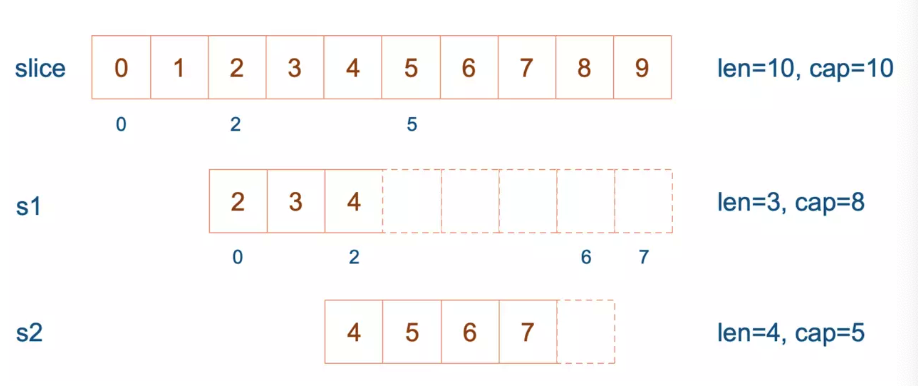
接着，向 s2 尾部追加一个元素 100：
s2 = append(s2, 100)
s2 容量刚好够，直接追加。不过，这会修改原始数组对应位置的元素。这一改动，数组和 s1 都可以看得到。
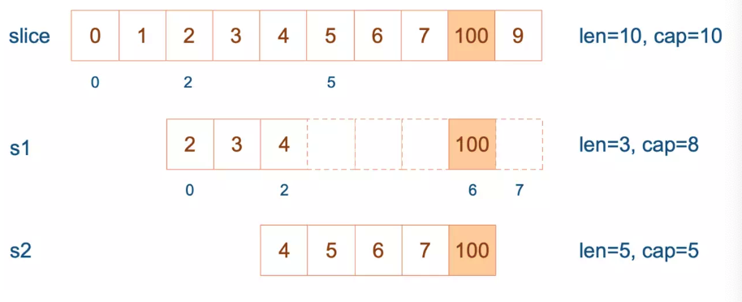
再次向 s2 追加元素200：
s2 = append(s2, 100)
这时，s2 的容量不够用，该扩容了。于是，s2 另起炉灶，将原来的元素复制新的位置，扩大自己的容量。并且为了应对未来可能的 append 带来的再一次扩容，s2 会在此次扩容的时候多留一些 buffer，将新的容量将扩大为原始容量的2倍，也就是10了。
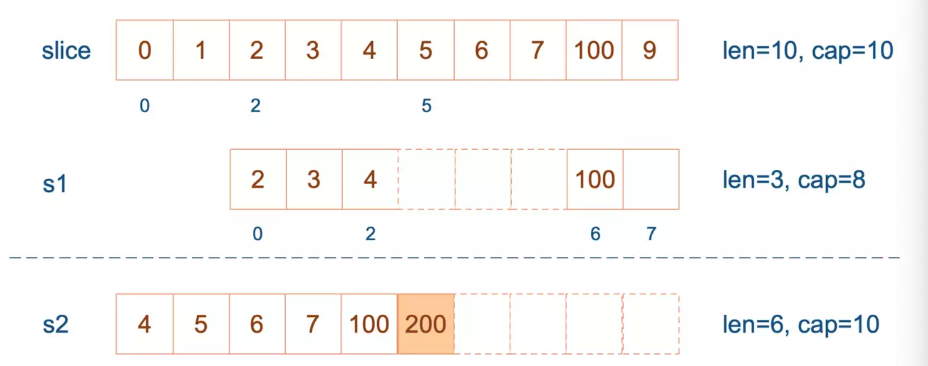
最后，修改 s1 索引为2位置的元素：
s1[2] = 20
这次只会影响原始数组相应位置的元素。它影响不到 s2 了，人家已经远走高飞了。
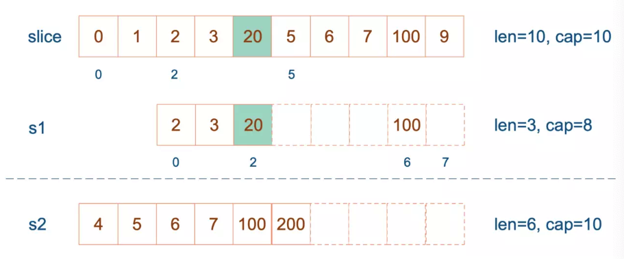
再提一点，打印 s1 的时候，只会打印出 s1 长度以内的元素。所以，只会打印出3个元素，虽然它的底层数组不止3个元素。
至于，我们想在汇编层面看看到底它们是如何共享底层数组的，限于篇幅，这里不再展开。感兴趣的同学可以在公众号后台回复：切片截取。
我会给你详细分析函数调用关系，对共享底层数组的行为也会一目了然。二维码见文章底部。
slice 和数组的区别在哪¶
slice 的底层数据是数组，slice 是对数组的封装，它描述一个数组的片段。两者都可以通过下标来访问单个元素。
数组是定长的，长度定义好之后，不能再更改。在 Go 中，数组是不常见的，因为其长度是类型的一部分，限制了它的表达能力，比如 [3]int 和 [4]int 就是不同的类型。
而切片则非常灵活，它可以动态地扩容。切片的类型和长度无关。
append 到底做了什么¶
先来看看 append 函数的原型：
func append(slice []Type, elems ...Type) []Type
append 函数的参数长度可变，因此可以追加多个值到 slice 中，还可以用 ... 传入 slice，直接追加一个切片。
slice = append(slice, elem1, elem2)
slice = append(slice, anotherSlice...)
append函数返回值是一个新的slice，Go编译器不允许调用了 append 函数后不使用返回值。
append(slice, elem1, elem2)
append(slice, anotherSlice...)
所以上面的用法是错的，不能编译通过。
使用 append 可以向 slice 追加元素，实际上是往底层数组添加元素。但是底层数组的长度是固定的，如果索引 len-1 所指向的元素已经是底层数组的最后一个元素，就没法再添加了。
这时，slice 会迁移到新的内存位置，新底层数组的长度也会增加，这样就可以放置新增的元素。同时，为了应对未来可能再次发生的 append 操作，新的底层数组的长度，也就是新 slice 的容量是留了一定的 buffer 的。否则，每次添加元素的时候，都会发生迁移，成本太高。
新 slice 预留的 buffer 大小是有一定规律的。网上大多数的文章都是这样描述的：
当原 slice 容量小于
1024的时候，新 slice 容量变成原来的2倍；原 slice 容量超过1024，新 slice 容量变成原来的1.25倍。
我在这里先说结论：以上描述是错误的。
为了说明上面的规律是错误的，我写了一小段玩具代码：
package main
import "fmt"
func main() {
s := make([]int, 0)
oldCap := cap(s)
for i := 0; i < 2048; i++ {
s = append(s, i)
newCap := cap(s)
if newCap != oldCap {
fmt.Printf("[%d -> %4d] cap = %-4d | after append %-4d cap = %-4d\n", 0, i-1, oldCap, i, newCap)
oldCap = newCap
}
}
}
我先创建了一个空的 slice，然后，在一个循环里不断往里面 append 新的元素。然后记录容量的变化，并且每当容量发生变化的时候，记录下老的容量，以及添加完元素之后的容量，同时记下此时 slice 里的元素。这样，我就可以观察，新老 slice 的容量变化情况，从而找出规律。
运行结果：
[0 -> -1] cap = 0 | after append 0 cap = 1
[0 -> 0] cap = 1 | after append 1 cap = 2
[0 -> 1] cap = 2 | after append 2 cap = 4
[0 -> 3] cap = 4 | after append 4 cap = 8
[0 -> 7] cap = 8 | after append 8 cap = 16
[0 -> 15] cap = 16 | after append 16 cap = 32
[0 -> 31] cap = 32 | after append 32 cap = 64
[0 -> 63] cap = 64 | after append 64 cap = 128
[0 -> 127] cap = 128 | after append 128 cap = 256
[0 -> 255] cap = 256 | after append 256 cap = 512
[0 -> 511] cap = 512 | after append 512 cap = 1024
[0 -> 1023] cap = 1024 | after append 1024 cap = 1280
[0 -> 1279] cap = 1280 | after append 1280 cap = 1696
[0 -> 1695] cap = 1696 | after append 1696 cap = 2304
在老 slice 容量小于1024的时候，新 slice 的容量的确是老 slice 的2倍。目前还算正确。
但是，当老 slice 容量大于等于 1024 的时候，情况就有变化了。当向 slice 中添加元素 1280 的时候，老 slice 的容量为 1280，之后变成了 1696，两者并不是 1.25 倍的关系（1696/1280=1.325）。添加完 1696 后，新的容量 2304 当然也不是 1696 的 1.25 倍。
可见，现在网上各种文章中的扩容策略并不正确。我们直接搬出源码：源码面前，了无秘密。
从前面汇编代码我们也看到了，向 slice 追加元素的时候，若容量不够，会调用 growslice 函数，所以我们直接看它的代码。
// go 1.9.5 src/runtime/slice.go:82
func growslice(et *_type, old slice, cap int) slice {
// ……
newcap := old.cap
doublecap := newcap + newcap
if cap > doublecap {
newcap = cap
} else {
if old.len < 1024 {
newcap = doublecap
} else {
for newcap < cap {
newcap += newcap / 4
}
}
}
// ……
capmem = roundupsize(uintptr(newcap) * ptrSize)
newcap = int(capmem / ptrSize)
}
看到了吗？如果只看前半部分，现在网上各种文章里说的 newcap 的规律是对的。现实是，后半部分还对 newcap 作了一个内存对齐，这个和内存分配策略相关。进行内存对齐之后，新 slice 的容量是要 大于等于 老 slice 容量的 2倍或者1.25倍。
之后，向 Go 内存管理器申请内存，将老 slice 中的数据复制过去，并且将 append 的元素添加到新的底层数组中。
最后，向 growslice 函数调用者返回一个新的 slice，这个 slice 的长度并没有变化，而容量却增大了。
关于 append，我们最后来看一个例子，来源于参考资料部分的【Golang Slice的扩容规则】。
package main
import "fmt"
func main() {
s := []int{1,2}
s = append(s,4,5,6)
fmt.Printf("len=%d, cap=%d",len(s),cap(s))
}
运行结果是：
len=5, cap=6
如果按网上各种文章中总结的那样：小于原 slice 长度小于 1024 的时候，容量每次增加 1 倍。添加元素 4 的时候，容量变为4；添加元素 5 的时候不变；添加元素 6 的时候容量增加 1 倍，变成 8。
那上面代码的运行结果就是：
len=5, cap=8
这是错误的！我们来仔细看看，为什么会这样，再次搬出代码：
// go 1.9.5 src/runtime/slice.go:82
func growslice(et *_type, old slice, cap int) slice {
// ……
newcap := old.cap
doublecap := newcap + newcap
if cap > doublecap {
newcap = cap
} else {
// ……
}
// ……
capmem = roundupsize(uintptr(newcap) * ptrSize)
newcap = int(capmem / ptrSize)
}
这个函数的参数依次是 元素的类型，老的 slice，新 slice 最小求的容量。
例子中 s 原来只有 2 个元素，len 和 cap 都为 2，append 了三个元素后，长度变为 3，容量最小要变成 5，即调用 growslice 函数时，传入的第三个参数应该为 5。即 cap=5。而一方面，doublecap 是原 slice容量的 2 倍，等于 4。满足第一个 if 条件，所以 newcap 变成了 5。
接着调用了 roundupsize 函数，传入 40。（代码中ptrSize是指一个指针的大小，在64位机上是8）
我们再看内存对齐，搬出 roundupsize 函数的代码：
// src/runtime/msize.go:13
func roundupsize(size uintptr) uintptr {
if size < _MaxSmallSize {
if size <= smallSizeMax-8 {
return uintptr(class_to_size[size_to_class8[(size+smallSizeDiv-1)/smallSizeDiv]])
} else {
//……
}
}
//……
}
const _MaxSmallSize = 32768
const smallSizeMax = 1024
const smallSizeDiv = 8
很明显，我们最终将返回这个式子的结果：
class_to_size[size_to_class8[(size+smallSizeDiv-1)/smallSizeDiv]]
这是 Go 源码中有关内存分配的两个 slice。class_to_size通过 spanClass获取 span划分的 object大小。而 size_to_class8 表示通过 size 获取它的 spanClass。
var size_to_class8 = [smallSizeMax/smallSizeDiv + 1]uint8{0, 1, 2, 3, 3, 4, 4, 5, 5, 6, 6, 7, 7, 8, 8, 9, 9, 10, 10, 11, 11, 12, 12, 13, 13, 14, 14, 15, 15, 16, 16, 17, 17, 18, 18, 18, 18, 19, 19, 19, 19, 20, 20, 20, 20, 21, 21, 21, 21, 22, 22, 22, 22, 23, 23, 23, 23, 24, 24, 24, 24, 25, 25, 25, 25, 26, 26, 26, 26, 26, 26, 26, 26, 27, 27, 27, 27, 27, 27, 27, 27, 28, 28, 28, 28, 28, 28, 28, 28, 29, 29, 29, 29, 29, 29, 29, 29, 30, 30, 30, 30, 30, 30, 30, 30, 30, 30, 30, 30, 30, 30, 30, 30, 31, 31, 31, 31, 31, 31, 31, 31, 31, 31, 31, 31, 31, 31, 31, 31}
var class_to_size = [_NumSizeClasses]uint16{0, 8, 16, 32, 48, 64, 80, 96, 112, 128, 144, 160, 176, 192, 208, 224, 240, 256, 288, 320, 352, 384, 416, 448, 480, 512, 576, 640, 704, 768, 896, 1024, 1152, 1280, 1408, 1536, 1792, 2048, 2304, 2688, 3072, 3200, 3456, 4096, 4864, 5376, 6144, 6528, 6784, 6912, 8192, 9472, 9728, 10240, 10880, 12288, 13568, 14336, 16384, 18432, 19072, 20480, 21760, 24576, 27264, 28672, 32768}
我们传进去的 size 等于 40。所以 (size+smallSizeDiv-1)/smallSizeDiv = 5；获取 size_to_class8 数组中索引为 5 的元素为 4；获取 class_to_size 中索引为 4 的元素为 48。
最终，新的 slice 的容量为 6：
newcap = int(capmem / ptrSize) // 6
至于，上面的两个魔法数组的由来，暂时就不展开了。
为什么 nil slice 可以直接 append¶
其实 nil slice 或者 empty slice 都是可以通过调用 append 函数来获得底层数组的扩容。最终都是调用 mallocgc 来向 Go 的内存管理器申请到一块内存，然后再赋给原来的nil slice 或 empty slice，然后摇身一变，成为“真正”的 slice 了。
传 slice 和 slice 指针有什么区别¶
前面我们说到，slice 其实是一个结构体，包含了三个成员：len, cap, array。分别表示切片长度，容量，底层数据的地址。
当 slice 作为函数参数时，就是一个普通的结构体。其实很好理解：若直接传 slice，在调用者看来，实参 slice 并不会被函数中的操作改变；若传的是 slice 的指针，在调用者看来，是会被改变原 slice 的。
值的注意的是，不管传的是 slice 还是 slice 指针，如果改变了 slice 底层数组的数据，会反应到实参 slice 的底层数据。为什么能改变底层数组的数据？很好理解：底层数据在 slice 结构体里是一个指针，仅管 slice 结构体自身不会被改变，也就是说底层数据地址不会被改变。 但是通过指向底层数据的指针，可以改变切片的底层数据，没有问题。
通过 slice 的 array 字段就可以拿到数组的地址。在代码里，是直接通过类似 s[i]=10 这种操作改变 slice 底层数组元素值。
另外，啰嗦一句，Go 语言的函数参数传递，只有值传递，没有引用传递。后面会再写一篇相关的文章，敬请期待。
再来看一个年幼无知的代码片段：
package main
func main() {
s := []int{1, 1, 1}
f(s)
fmt.Println(s)
}
func f(s []int) {
// i只是一个副本，不能改变s中元素的值
/*for _, i := range s {
i++
}
*/
for i := range s {
s[i] += 1
}
}
运行一下，程序输出：
[2 2 2]
果真改变了原始 slice 的底层数据。这里传递的是一个 slice 的副本，在 f 函数中，s 只是 main 函数中 s 的一个拷贝。在f 函数内部，对 s 的作用并不会改变外层 main 函数的 s。
要想真的改变外层 slice，只有将返回的新的 slice 赋值到原始 slice，或者向函数传递一个指向 slice 的指针。我们再来看一个例子：
package main
import "fmt"
func myAppend(s []int) []int {
// 这里 s 虽然改变了，但并不会影响外层函数的 s
s = append(s, 100)
return s
}
func myAppendPtr(s *[]int) {
// 会改变外层 s 本身
*s = append(*s, 100)
return
}
func main() {
s := []int{1, 1, 1}
newS := myAppend(s)
fmt.Println(s)
fmt.Println(newS)
s = newS
myAppendPtr(&s)
fmt.Println(s)
}
运行结果：
[1 1 1]
[1 1 1 100]
[1 1 1 100 100]
myAppend 函数里，虽然改变了 s，但它只是一个值传递，并不会影响外层的 s，因此第一行打印出来的结果仍然是 [1 1 1]。
而 newS 是一个新的 slice，它是基于 s 得到的。因此它打印的是追加了一个 100 之后的结果： [1 1 1 100]。
最后，将 newS 赋值给了 s，s 这时才真正变成了一个新的slice。之后，再给 myAppendPtr 函数传入一个 s 指针，这回它真的被改变了：[1 1 1 100 100]。
总结¶
到此，关于 slice 的部分就讲完了，不知大家有没有看过瘾。我们最后来总结一下：
- 切片是对底层数组的一个抽象，描述了它的一个片段。
- 切片实际上是一个结构体，它有三个字段：长度，容量，底层数据的地址。
- 多个切片可能共享同一个底层数组，这种情况下，对其中一个切片或者底层数组的更改，会影响到其他切片。
append函数会在切片容量不够的情况下，调用growslice函数获取所需要的内存，这称为扩容，扩容会改变元素原来的位置。- 扩容策略并不是简单的扩为原切片容量的
2倍或1.25倍，还有内存对齐的操作。扩容后的容量 >= 原容量的2倍或1.25倍。 - 当直接用切片作为函数参数时，可以改变切片的元素，不能改变切片本身；想要改变切片本身，可以将改变后的切片返回，函数调用者接收改变后的切片或者将切片指针作为函数参数。
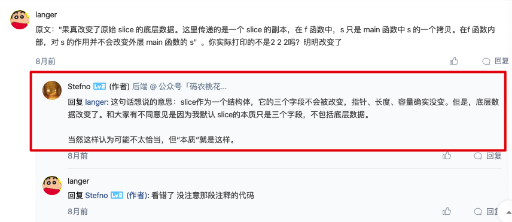